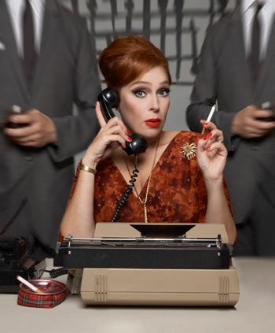

past performance |
|||
|
THE MAD WORLD OF MISS HATHAWAY: MERGERS AND NEW POSITIONS Written by & Starring with Jill Pangallo, Rob Roth, Bradford Scobie, Clayton Dean Smith, Stephen Michael Rondel, Kyle Supley, Ede Thurrell & Gia Mele Musical Accompaniment by Kyle Forester THE RETURN OF BOOB-TUBE INSPIRED MUSICAL PARODY, “THE MAD WORLD OF MISS HATHAWAY: “MERGERS AND NEW POSITIONS!” |
 | ||
|
This episode finds know-it-all head of the secretarial pool, JoAnne Hathaway finally becoming a partner of Spencer Colfax Raper and Shenanigans advertising agency by sleeping her way to the top. But when SCRS merges with a rival advertising agency, Miss Hathaway realizes as long as she's a woman, they'll always treat her like as secretary. Being ever resourceful, she decides to hatch a plan to prove to the men that she's just as valuable above the desk as she is under it. A hilarious mid-century risque romp through Madison Avenue with all original music. Don't miss it! Music, lyrics and book written by and starring Angela Di Carlo (The Downtown Series at Feinstein's, Just to be Polite at Joe's Pub) as JoAnne Hathaway. With a hilarious all-star supporting cast including, Bradford Scobie (Moisty the Snowman), Clayton Dean Smith (Mr. Irresistible), Rob Roth (Click + Drag, Craig's Dream, The Mystery of Claywoman), Jill Pangallo (Hope Is Expensive, The Ho Ho's), Stephen Michael Rondel (The New Acting Company, Muffins in the Window), and Kyle Supley (Vintage Vantage). With Kyle Forester (Ladybug Transistor, Crystal Stilts) on piano. "The Mad World of Miss Hathaway” has been featured in the “Lowbrow/Brilliant” section of New York Magazine's infamous Approval Matrix and was chosen by Time Out New York as a critics pick, featured in the Village Voice as a Voice Choice, and written up in New York Press, Show Business Weekly.com, Next Magazine, Capitol New York, Odyssey Magazine and Gayletter. After eight hilarious episodes, it has quickly developed a devoted cult following among many fans of Mad Men (and non-fans as well!) |
|||
upcoming performances |
|||
 |
|||
| EVQ Film Festival 2018 August 20-25 |
|||
performance archives |
|||
| 2018 | 2017 | 2016 | 2015 |
| 2014 | 2013 | 2012 | 2011 |
| 2010 | 2009 | 2008 | 2007 |